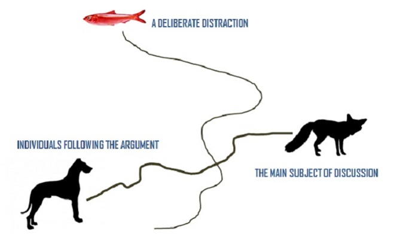
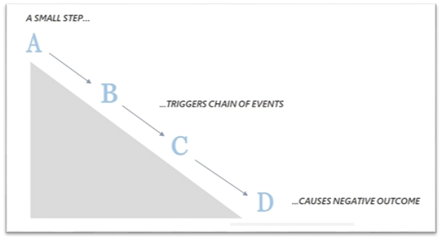

By the end of this chapter, you will be able to:
Fallacies are errors or tricks of reasoning. We call a fallacy an error of reasoning if it occurs accidentally; we call it a trick of reasoning if a speaker or writer uses it in order to deceive or manipulate their audience.
Fallacies can be either formal or informal. Whether a fallacy is an error or a trick, whether it is formal or informal, its use undercuts the validity and strength of any argument.
Fallacious reasoning can damage the credibility of the speaker or writer and improperly manipulate the emotions of the audience or reader.
Validity is a structural property, not a content-based one. Valid rules of inference, like modus ponens and modus tollens, provide templates for valid arguments. Formal fallacies are arguments with inherently flawed forms, destined to fail regardless of their content.
Invalid form: If A, then B. Not A. Therefore, not B.
Example: "If it's raining, the streets are wet. It's not raining. Therefore, the streets are not wet." (This is invalid because the streets could be wet from other causes.)
Invalid form: If A, then B. B. Therefore, A.
Example: "If it's raining, the streets are wet. The streets are wet. Therefore, it's raining." (This is invalid because something else could have made the streets wet.)
Informal fallacies are prevalent in everyday conversations and debates. They often divert attention from the actual logic of the argument, making it crucial to analyze both the content and context to detect them. Unlike formal fallacies, informal fallacies rely more on the misuse of language and evidence, requiring a deeper analysis of the argument's content to identify them.
P1: All factories are plants.
P2: All plants are things that contain chlorophyll.
C: Therefore, all factories are things that contain chlorophyll.
The presentation that follows divides twenty-two informal fallacies into five main groups:
The fallacies of relevance share a common characteristic: the premises used in these arguments may be psychologically persuasive or emotionally appealing, but they are logically irrelevant to the conclusion. As a result, the conclusion may seem to follow from the premises, creating a psychological illusion of validity, even though there is no logical connection.
Fallacies of relevance include:
Argumentum ad baculum, Latin for "argument to the cudgel" or "appeal to the stick," is the fallacy where someone tries to win an argument by wielding the threat of negative consequences if you disagree.
The fallacy of appeal to the people, also known as ad populum, exploits people's desires for love, respect, admiration, value, recognition, and acceptance. It uses two main approaches to sway an audience:
The direct approach occurs when an arguer addresses a large group of people, using emotional tactics to stir up the crowd's emotions and enthusiasms. The objective is to gain acceptance for their conclusion by creating a sense of collective mindset or mob mentality among the audience.
Example: "Join us in protesting against this policy! We are the voice of the people, and together, we can make a difference. Let's show the government that we won't stand for this injustice!"
In this example, the arguer directly addresses a large group of people and tries to rally them behind a cause by appealing to their shared identity as "the voice of the people." The emotional appeal and the call for collective action are meant to sway individuals to accept the conclusion and participate in the protest.
Remember, while it's important to stand up for causes we believe in, it's crucial to evaluate arguments based on their logical merits rather than solely relying on emotional appeals or the popularity of a particular viewpoint.
The indirect approach targets individuals within a crowd separately, focusing on specific aspects of their relationship with the larger group. This approach encompasses three versions:
The arguer attempts to convince individuals to join the majority or follow the popular opinion by suggesting that since everyone else is doing it, they should too.
Example: "Don't miss out on the latest fashion trend! Everyone is wearing these sneakers, and you should too if you want to be seen as fashionable and in touch with the current style."
In this example, the arguer appeals to individuals' desire to fit in and be part of the crowd by underlining the popularity of a particular fashion trend. They suggest that embracing the trend will align them with the majority, encouraging them to follow suit.
The arguer appeals to individuals' desire for exclusivity or superiority by suggesting that accepting the conclusion will place them in an elite group or make them part of a select few.
Example: "This limited-edition watch is reserved for discerning connoisseurs who truly appreciate craftsmanship and luxury. Owning it will set you apart from the average consumer and elevate your status."
In this example, the arguer taps into individuals' desire to be seen as sophisticated and superior by emphasizing the exclusivity of the product. They suggest that acquiring the watch will place the individual in an elite group, elevating their social standing.
The arguer plays on individuals' vanity or ego, emphasizing that accepting the conclusion will increase their status, attractiveness, or self-worth in the eyes of others.
Example: "Use this skincare product to achieve flawless skin and become the envy of your friends. Imagine the compliments you'll receive and how much more confident you'll feel."
In this example, the arguer targets individuals' desire to be admired and validated by others. They highlight the potential improvement in appearance and the positive social consequences that come with using the skincare product, appealing to individuals' vanity and self-esteem.
An appeal to pity is an attempt to support a conclusion by evoking pity in the audience. Arguments that rely on this fallacy typically follow this structure:
Humans are naturally inclined to help others in distress. When we see someone's pain, it activates our empathy, making us want to ease their burden. However, this vulnerability can be manipulated to influence our judgment.
Not every appeal to compassion falls into the fallacy trap. Genuine calls for empathy can be both powerful and ethically sound. Here's how to distinguish the two:
"As a result of war and famine, thousands of children in country X are malnourished. You can help by sending money to Relief Agency Y. So, please send whatever you can spare to Relief Agency Y."
In this case, consider the following points:
The ad hominem fallacy attempts to discredit an argument by discrediting the arguer. Instead of addressing the argument's validity, the focus shifts to undermining the individual who presents the argument. This tactic sidesteps the actual issues and targets the person instead.
In this type, the respondent verbally abuses the arguer and ignores the argument. The focus is on attacking the individual personally rather than engaging with their claims.
This type involves calling attention to special circumstances or interests of the arguer and ignoring the argument itself. It suggests that the arguer's personal situation affects their credibility.
The tu quoque fallacy attempts to make the arguer look hypocritical by pointing out that they have acted contrary to their advice or position. It diverts attention from the argument to the arguer's behavior.
Ad Hominem (Latin for "against the person") is a fallacy that involves attacking the person making an argument instead of addressing the argument itself. This fallacy occurs when the attack on the person is completely irrelevant to the argument being made.
"Tony claims that the origin of life was an 'accident,' but how can we trust him? He's a godless person who has spent more time in jail than in church."
In this example, the focus shifts from the argument about the origin of life to Tony's personal characteristics, such as his lack of religious belief and his criminal history. These details are irrelevant to the validity of Tony's argument. Instead of addressing the argument's substance, the attacker aims to discredit Tony as a person, which does not engage with the argument itself.
When others resort to personal attacks, it can be seen as a compliment to the quality of your argument. Such attacks often indicate their desperation rather than a valid rebuttal of your position. It's important to stay focused on the substance of the argument and avoid getting sidetracked by irrelevant personal attacks. Remember, a strong argument stands on its own merits, regardless of the character or background of the person making it.
While abusive ad hominem involves irrelevant personal attacks, there are situations where attacking someone's character can be relevant to the discussion. The key is the connection between the attack and the argument's topic.
A circumstantial ad hominem fallacy is committed when someone attempts to refute an argument by attacking the motives or circumstances of the person making it, rather than addressing the argument itself. This tactic is logically fallacious because the speaker's personal situation does not inherently affect the truth or validity of their claim.
An argument falls prey to the circumstantial ad hominem fallacy when its rejection is based on who is making it, rather than what is being said. This fallacy assumes that someone's vested interests or life experiences automatically render their opinions unreliable, which is not necessarily true.
Attacking someone's circumstances or motives does not address the validity of their argument. To avoid falling into this fallacy:
The "tu quoque" fallacy, also known as "you too," involves dismissing an argument based solely on the speaker's past actions or inconsistencies. This fallacy assumes that hypocrisy automatically invalidates an argument, which is not always the case.
The straw man fallacy is committed when someone attempts to refute an argument by attacking a distorted, exaggerated, or simplified version of it, rather than engaging with the actual claims or reasoning presented. This fallacious tactic creates the illusion of successfully defeating the opponent's position while ignoring its more substantial points.
A fallacious argument based on misrepresenting an opponent's position is known as a straw man fallacy. Instead of addressing the true argument, the straw man fallacy attacks a weaker or easily refuted version of it, giving the impression of victory without addressing the key points.
The accident fallacy occurs when a general principle is misapplied to an exceptional case that it was not designed to address, leading to an erroneous conclusion. This fallacy arises from failing to recognize the specific context or exceptions to the general rule, which can result in unreasonable or impractical conclusions.
The accident fallacy involves applying a general rule to a specific case where the rule does not apply. This misapplication often overlooks important contextual factors that justify exceptions to the rule.
The fallacy of "missing the point," also known as "ignoratio ellenchi," occurs when someone ignores or fails to address the actual issue at hand and instead presents a conclusion that is not logically connected to the premises. This fallacy happens when the conclusion drawn does not logically follow from the arguments or evidence provided.
"Missing the point" involves drawing a conclusion that is not relevant to or supported by the premises of the argument. This fallacy often results from addressing a related but different issue, rather than the issue that was originally presented.
Argument: "Crimes of theft and robbery have been increasing at an alarming rate lately. The conclusion is obvious: we must reinstate the death penalty immediately."
In this example, the argument commits the fallacy of missing the point because reinstating the death penalty is not a logical response to the issue of increasing theft and robbery. The conclusion does not directly address how the death penalty would effectively address or reduce these specific crimes. Instead, it introduces an unrelated or illogical solution that does not follow from the stated premises.
The red herring fallacy occurs when someone intentionally redirects the attention of the audience by introducing a different topic that may be subtly related but is not directly relevant to the original issue at hand. This tactic is used to divert attention away from the main point or topic of discussion.
A red herring is a logical fallacy where an argument or discussion is diverted to a different topic that distracts from the issue being addressed. It shifts focus away from the relevant argument to something tangentially related but not directly pertinent.
Instruction: Identify the fallacies of relevance committed by the following arguments, giving a brief explanation for your answer.
Taxpayer to judge: Your Honor, I admit that I declared thirteen children as dependents on my tax return, even though I have only two. But if you find me guilty of tax evasion, my reputation will be ruined. I’ll probably lose my job, my poor wife will not be able to have the operation that she desperately needs, and my kids will starve. Surely I am not guilty.
Argument: “No one should ever go to war. After all, everyone knows that one should not kill another person.”
Argument: You should read Daniel’s latest book right away. It’s sold over a million copies, and practically everyone in the main street circuit is talking about it.
Argument: Surely you welcome the opportunity to join our protective organization. Think of all the money you will lose from broken windows, overturned trucks, and damaged merchandise in the event of your not joining.
Argument: Something is seriously wrong with university education these days. After twelve years of decline, scores are still extremely low, and university graduates are practically incapable of reading and writing. The obvious conclusion is that we should close the universities.
Argument: Professor Ballard’s argument in favor of restructuring our course offering isn’t worth a hoot. But what would you expect from someone who publishes in such mediocre journals? And did you hear Ballard’s recent lecture on Aristotle? It was total non-sense.
The fallacies of weak induction differ from the fallacies of relevance in that their flaw lies not in having logically irrelevant premises, as is the case with the eight fallacies of relevance. Instead, the problem with weak induction lies in the insufficiency of the connection between the premises and the conclusion, which is not strong enough to adequately support the conclusion.
The fallacy of appeal to unqualified authority is a specific type of argument from authority. It takes place when the authority or witness being cited is not reliable or trustworthy. There are multiple reasons why an authority or witness may lack trustworthiness:
These factors undermine the reliability and credibility of the authority or witness being invoked, making the appeal to unqualified authority fallacious. It is important to critically assess the qualifications, trustworthiness, and potential biases of the authorities or witnesses being relied upon to ensure the validity of an argument.
Imagine a popular actor named Alex is promoting a new diet plan on social media. Alex claims to have achieved remarkable weight loss results by following this diet and encourages their followers to try it as well.
While Alex is widely recognized and admired for their acting talent, they do not possess the qualifications or expertise in the field of nutrition or dietetics. Their success in the entertainment industry does not automatically make them a reliable or trustworthy source of dietary advice.
The appeal to unqualified authority fallacy occurs when people are swayed by Alex's celebrity status and assume that their endorsement of the diet plan is based on genuine expertise. However, without proper credentials or knowledge in nutrition, Alex's recommendations lack the necessary foundation to be considered reliable or accurate.
To make an informed decision about the diet plan, it is important to consult qualified professionals such as registered dietitians or nutritionists who have the appropriate education, training, and experience in the field of nutrition. Relying solely on the endorsement of a celebrity, despite their lack of qualifications, would be fallacious and potentially lead to misguided dietary choices.
In this example, the appeal to unqualified authority arises from the assumption that Alex's fame and success in acting automatically translate into expertise in the field of nutrition. It is essential to critically evaluate the qualifications and credibility of the authority being cited to ensure that the information or advice provided is trustworthy and based on reliable expertise.
Imagine a person named Sarah is engaged in a discussion about childhood vaccinations. Sarah argues, "The surgeon-general has stated that babies should receive the MMR vaccine. So, it is unquestionable that babies should receive the MMR vaccine."
In this example, Sarah is relying on the statement made by the surgeon-general as the sole basis for her argument. However, the fallacy of unqualified authority can be identified in this situation.
Firstly, the intent of the arguer (Sarah) is important to consider. Sarah is using the statement of the surgeon-general as an appeal to authority without critically assessing the evidence or reasoning behind the recommendation. Instead of presenting a well-reasoned argument with supporting evidence, Sarah simply relies on the authority of the surgeon-general to make her case, assuming that their statement alone is sufficient to support her position.
Secondly, the credibility and trustworthiness of the surgeon-general should be evaluated. While the surgeon-general is a recognized authority in matters of public health, it is essential to consider that their statement may be subject to scrutiny and potential biases. It is important to critically examine the evidence and reasoning behind the recommendation rather than accepting it blindly based solely on the authority's position.
The appeal to ignorance fallacy, also known as Argumentum Ad Ignorantiam, occurs when an argument's premises state that something has not been proven or is unknown, but the conclusion asserts a definite claim about that thing.
Throughout history, despite numerous attempts, no scientific evidence has been presented to prove the existence of reincarnation. Therefore, it is reasonable to conclude that reincarnation does not occur.
In this example, the fallacy of appeal to ignorance is committed because the lack of evidence for reincarnation is used as a basis to assert that reincarnation does not happen. The argument assumes that the absence of proof equates to the negation of the claim. Lack of evidence is not the same as evidence of absence. It is possible that the evidence has not been discovered or that further research is needed. Therefore, concluding that reincarnation does not occur solely based on the absence of proof is fallacious.
In the context of a court of law, the presumption of innocence until proven guilty is an exception to the appeal to ignorance fallacy. According to this legal principle, a defendant is considered innocent until the prosecutor presents sufficient evidence to prove their guilt beyond a reasonable doubt. In this specific context, the absence of proof is used to maintain the presumption of innocence rather than making a definite assertion of guilt. This exception recognizes the importance of upholding the burden of proof in legal proceedings.
The fallacy of hasty generalization occurs when a general conclusion is made based on a sample that is biased or too small to accurately represent the entire population.
In order to determine the beliefs of most Americans regarding God, a survey was conducted among over ten thousand scientists at colleges and universities across America. Less than 40 percent of the scientists surveyed reported believing in God. From this, it is concluded that most Americans no longer believe in God.
This argument commits the fallacy of hasty generalization because it draws a general conclusion about the beliefs of most Americans based on a sample that is biased and not representative of the entire population. The survey was conducted exclusively among scientists, who may hold different beliefs compared to the general population. Therefore, it is not valid to generalize the beliefs of the entire American population based on this biased sample.
Over the past six months, I have hired three individuals from India, and all three have been lazy and dishonest. Therefore, I conclude that Indians, as a group, are lazy and dishonest.
This example illustrates the fallacy of hasty generalization. The conclusion is based on a small sample size and assumes that the behavior of these three individuals is representative of all Indians. It fails to consider other factors such as individual differences, personal characteristics, and cultural diversity within the Indian population. Drawing a general conclusion about an entire group based on a limited sample is an unjustified and biased generalization.
In both examples, the fallacy of hasty generalization occurs because the general conclusions reached are not supported by sufficiently representative or unbiased samples. It is important to gather a substantial and diverse sample size to draw accurate conclusions about a larger population and avoid making hasty generalizations.
The fallacy of false cause occurs when a causal connection between premises and conclusion is assumed, even though there is no substantial evidence to support it. The false cause fallacy can manifest in various ways, one of which is the "post hoc ergo propter hoc" fallacy, meaning "after this, therefore on account of this." In this fallacy, a temporal relationship is mistaken for a cause-and-effect relationship.
After observing several basketball games I attended this year, I noticed a pattern. Every time I purchased a good seat, our team won. Conversely, every time I bought a cheap, bad seat, we lost. Therefore, I concluded that my choice of seating somehow caused our team's wins or losses. This argument commits the false cause fallacy of post hoc ergo propter hoc. It assumes that the temporal sequence of events (buying a good seat and the team's subsequent win) implies a causal relationship between the two. However, correlation does not necessarily imply causation. There may be other factors at play, such as the team's performance, the opponents they faced, or even random chance, that contribute to the outcomes of the games. Without further evidence establishing a direct causal link between purchasing a good seat and the team's success, the conclusion that buying a good seat causes the team to win is unwarranted. The observed pattern may be coincidental or influenced by other variables, making it fallacious to assume a causal connection based solely on a temporal relationship.
I sneezed at the same time the power went off. My sneeze did something to make the power go off. (The person's sneeze caused the power outage simply because the two events happened at the same time. In reality, the power outage could have been caused by a completely unrelated factor, such as a problem with the electrical grid.)
The football team lost last week, and now this week's pep rally is cancelled. I can't believe that the principal would do that! (In reality, the pep rally was cancelled because of a required standardized test.) (It assumes that the principal cancelled the pep rally as a punishment for losing the football game. However, the true reason for the cancellation was the standardized test. The occurrence of the football team's loss and the cancellation of the pep rally were coincidental.)
Kevin's dog scratched his leg, and that night he had a fever. Kevin concluded that his dog must have infected him with something. (The dog's scratch caused Kevin's subsequent fever. While it is possible that the scratch led to an infection, there could be other explanations for Kevin's fever, such as a common illness or coincidence.)
Lois and Jan did a "snow dance" one afternoon, and it snowed that night. They claimed to have brought the snow. (Lois and Jan attribute the occurrence of snowfall to their snow dance. However, the snowfall might have been purely coincidental or the result of natural weather patterns. The dance does not necessarily have a causal relationship with the snowfall.)
Occurs when an explanation mistakenly identifies a correlation as a causation. In this fallacy, one thing is presented as the cause of another, but the connection between the two is misunderstood. This can involve either attributing the effect as the cause or incorrectly assuming cause and effect between two phenomena that are actually both results of a common cause. The term "non causa pro causa" is a concise way of referring to this fallacy, but it is also commonly known as "non causa."
Putting more police on the streets actually causes crime to increase! When we increased the number of cops on the beat, the number of crimes witnessed by police actually went up. (In this example, the argument claims that the increase in the number of police officers on the streets directly caused an increase in crime. However, this conclusion is based on a misunderstanding of the correlation between police presence and reported crimes. It is possible that the increased police presence led to a higher number of crimes being observed and reported, rather than causing an actual increase in crime. The correlation between police presence and crime rates does not necessarily imply a causal relationship.)
People on Medicaid tend to be sicker than people who do not have insurance at all. This proves that Medicaid is a bad idea. Putting people on Medicaid actually causes them to get sick. (In this example, the argument suggests that being on Medicaid, a government healthcare program, causes people to become sicker compared to those who have no insurance. However, this conclusion overlooks the fact that people who qualify for Medicaid often have lower incomes and may have pre-existing health conditions. The correlation between being on Medicaid and having poorer health does not necessarily mean that Medicaid is the cause of their poorer health. Other factors, such as socioeconomic status and pre-existing conditions, could be influencing the observed correlation.)
The fallacy of oversimplification occurs when an arguer intentionally selects a single factor and presents it as the sole cause or solution to a complex problem. This fallacy disregards the intricate details and complexities that deserve consideration in a comprehensive analysis.
The scores on standardized tests have been dropping for several decades. What accounts for this? Well, during these same decades, the average time a child spends watching TV (per day) has increased. Therefore, the cause is obvious: Kids are watching too much TV when they need to be reading instead.
In this example, the arguer oversimplifies the decline in standardized test scores by attributing it solely to increased TV watching among children. This oversimplification ignores other potential factors, such as changes in educational policies, socio-economic disparities, teaching methodologies, and technological advancements. By focusing solely on TV watching as the cause, the arguer neglects a thorough examination of the broader and more complex factors that may contribute to the decline in test scores. Oversimplification often occurs in various forms of media for the sake of brevity, clarity, or to serve a particular political purpose. By reducing complex issues into simplistic explanations, the true complexity and depth of the subject matter can be overlooked, leading to an incomplete or misleading understanding of the problem at hand. It is important to recognize and critically evaluate these oversimplifications to gain a more accurate understanding of complex issues.
The Slippery Slope fallacy arises when an argument's conclusion is based on the assumption of a chain reaction of events, without adequate justification for believing that the chain reaction will truly occur. In this fallacy, the arguer asserts that if one event happens, it will trigger a series of subsequent events that will lead to increasingly negative or extreme outcomes. However, there is insufficient evidence or reasoning provided to support the likelihood of this chain of events actually unfolding. It's important to note that while causal relationships between events can exist and be validly argued, the Slippery Slope fallacy goes beyond that by making unjustified claims about a sequence of events without a strong basis.
If we allow students to use smartphones in the classroom for educational purposes, it will lead to complete chaos. They will become addicted to their devices, lose focus on their studies, and ultimately fail their exams. Therefore, we should ban smartphones altogether.
In this example, the arguer claims that allowing students to use smartphones in the classroom for educational purposes will lead to a chain reaction of negative consequences. However, there is no sufficient reason provided to support the assertion that this chain reaction will actually occur. The argument assumes that the mere presence of smartphones will automatically lead to addiction, loss of focus, and academic failure without considering other factors, such as the implementation of proper guidelines or the potential benefits of using technology in education. The Slippery Slope fallacy is evident in this example as the conclusion is based on an alleged chain reaction of events without adequate justification for the likelihood of that chain reaction actually taking place.
The fallacy of weak analogy occurs when an argument relies on an irrelevant or weak comparison, or when there is a more appropriate dis-analogy present. Weak analogy is often likened to the phrase "comparing apples with oranges," where two things that are fundamentally different or incomparable are being compared. Apples and oranges share some basic features like being fruits, but their differences in taste, texture, and usage render them poor comparisons for most purposes.
The basic structure of an argument based on analogy is as follows:
However, the fallacy of weak analogy occurs when the analogy between Entity A and Entity B is not strong enough to support the conclusion. This could be due to relevant differences between the entities that undermine the comparison being made.
Implementing stricter gun control laws is like banning kitchen knives because they can be used as weapons. Just as we restrict access to dangerous objects like knives, we should restrict access to firearms.
In this example, the arguer attempts to draw an analogy between stricter gun control laws and banning kitchen knives. However, this analogy is weak because there are significant differences between firearms and kitchen knives in terms of their purpose, potential for harm, and regulation. Firearms are designed specifically for causing harm or self-defense, while kitchen knives are primarily used for cooking and other non-violent purposes. Furthermore, firearms are subject to extensive regulation and background checks, unlike kitchen knives which are readily available for purchase. The analogy fails to provide a relevant comparison between the two entities and ignores the complexities associated with gun control. Therefore, the argument based on this weak analogy does not provide a strong justification for implementing stricter gun control laws.
Instruction: Identify the fallacies of weak induction committed by the following arguments, giving a brief explanation for your answer.
No one has ever been able to prove the existence of extrasensory perception. We must therefore conclude that extrasensory perception is a myth.
Lester Brown, universally respected geographer, has said that the destruction of tropical rainforests is one of the ten most serious worldwide problems. Thus, it must be the case that this is indeed a very serious problem.
A few minutes after Governor Smith finished his speech on television, a devastating earthquake struck southern America. For the safety of the people up there, it is imperative that Governor Smith make no more speeches.
The prohibition of assault weapons must be vigorously opposed. Once the gun-grabbing security forces have outlawed assault weapons, next they’ll go after handguns. After that, it will be shotguns and semiautomatic hunting rifles. In the end, law-abiding citizens will be left totally defenseless against predatory criminals and a tyrannical government.
The flow of electricity through a wire is similar to the flow of water through a pipe. When water runs downhill through a pipe, the pressure at the bottom of the hill is greater than it is at the top. Thus, when electricity flows downhill through a wire, the voltage should be greater at the bottom of the hill than at the top.
Fallacies of presumption refer to arguments that rely on assumptions that are usually not explicitly stated or backed up with evidence. Fallacies of presumption are like whispers in the dark, guiding the argument without ever appearing in the light. Bringing them out into the open exposes their lack of substance.
The fallacy of begging the question is committed whenever the arguer creates the illusion that inadequate premises provide adequate support for the conclusion by leaving out a possibly false (shaky) key premise, or by restating a possibly false premise as the conclusion (reasoning in a circle).
Capital punishment is justified for the crimes of murder because a state has a right to put someone to death for having intentionally killed someone else.
Explanation: In this example, the arguer assumes the conclusion ("capital punishment is justified") by relying on a potentially false or questionable premise ("a state has a right to put someone to death for murder"). The argument assumes the legitimacy of capital punishment without providing evidence or addressing counterarguments against it. It begs the question by using the conclusion as a premise, making the argument circular.
“Women have rights,” said the Bullfighters Association president. “But women shouldn’t fight bulls because a bullfighter is and should be a man.”
Explanation: The arguer assumes the conclusion ("women shouldn't fight bulls") by restating a potentially false or biased premise ("a bullfighter is and should be a man") as the conclusion. The argument begs the question by assuming the truth of the premise without providing any evidence or logical reasoning to support it. It fails to address counterarguments or provide a sound basis for the conclusion, making it fallacious.
Murder is morally wrong. This being the case, then abortion must also be morally wrong.
Explanation: The arguer assumes the conclusion ("abortion must be morally wrong") by relying on a premise ("murder is morally wrong") that may not be universally accepted or uncontroversial.
The fallacy of a loaded question occurs when an arguer asks a question that includes an unfair or unwarranted presupposition. A loaded question is one that contains a biased or questionable assumption. This type of argument is often intended to trap the respondent into acknowledging something they may not want to admit. The fallacy of a complex question is committed when a single question, which is essentially two or more questions, is asked, and a single answer is then applied to both questions.
“Have you stopped beating your spouse?”
Explanation: In this example, the question is loaded because it assumes that the person being asked has been beating their spouse. By phrasing the question in this way, the arguer is trying to trap the respondent into admitting guilt without providing any evidence or allowing for alternative explanations. It puts the respondent in a difficult position because any answer they give would be seen as an admission of guilt, even if they have never engaged in such behavior. The question contains an unfair and unwarranted presupposition, making it a clear example of the loaded question fallacy.
The fallacy of false dichotomy occurs when the argument attempts to manipulate by creating the impression that there are only two choices available, when in reality, there could be a broader range of options. By framing the argument in this way, the arguer aims to steer the audience towards a particular position by making it seem like the only viable or reasonable choice.
This fallacy is also known by various names, including false dichotomy, false binary, black-and-white thinking, bifurcation, denying a conjunct, the either-or fallacy, fallacy of exhaustive hypotheses, fallacy of false choice, or fallacy of the false alternative.
The false dichotomy fallacy follows this general structure:
Statement: "Do the ends justify the means?"
Explanation: This question creates a black-and-white picture where achieving a good goal can only be done through bad means. It ignores the possibility of finding less harmful or even beneficial ways to achieve the same outcome. Sometimes, pursuing seemingly noble goals through unethical means can actually undermine the intended good. It's crucial to consider the full range of options and their consequences before making such judgments.
Statement: "I had no choice"
Explanation: This statement often shuts down discussions about responsibility and potential alternatives. While there may be constraints and pressures, claiming complete helplessness absolves oneself of any agency or creativity in finding other solutions. By exploring the many paths not taken, we can learn from past mistakes and avoid repeating them in the future.
Statement: "Nature or nurture?"
Explanation: This classic debate creates a divide between genetics and environment that simplifies the complex realities of human behavior. Both factors play a role, often interwoven in intricate ways. Focusing solely on one or the other overlooks the interplay between them and limits our understanding of individual development and societal influences.
Statement: "You get what you pay for"
Explanation: This saying oversimplifies the complexities of markets and consumer behavior. It disregards factors like quality variations, hidden costs, and changing values. Breakthroughs in design, manufacturing, and value discovery can disrupt traditional assumptions about price and value. By acknowledging the dynamic nature of markets and consumer preferences, we can make more informed choices about what we buy and why.
The fallacy of suppressed evidence occurs when someone presents evidence or an argument in support of their position but intentionally omits or suppresses relevant evidence that could weaken or contradict their conclusion. This fallacy is often observed in the manipulation of statistics.
When an arguer engages in suppressed evidence, they selectively present information that supports their viewpoint while disregarding or concealing evidence that might challenge or undermine their stance. By withholding crucial evidence, they create a skewed or incomplete picture of the issue at hand, leading to a distorted understanding of the topic.
Suppression of evidence is particularly misleading when it comes to statistical data. By selectively presenting statistics that favor their position and disregarding contradictory data, the arguer can create a false impression of the statistical landscape, thereby misguiding others and reinforcing their own viewpoint.
It is important to recognize that suppressing evidence undermines the integrity of the argument by withholding relevant information that could influence the conclusion. A comprehensive and accurate analysis should consider all pertinent evidence, even if it goes against the arguer's position, in order to arrive at a more objective and informed judgment.
Example 1: A car company claims its model is the safest on the market, but only cites crash test results for specific scenarios while ignoring others where it performed poorly.
Example 2: A weight loss supplement advertises "clinically proven results" based on a small, short-term study, but fails to mention numerous studies that showed no significant effect.
Example 1: A politician presents job growth statistics during their term, but omits data on wage stagnation and declining job quality.
Example 2: A candidate claims their opponent is corrupt based on a single, questionable allegation, while ignoring the opponent's long record of ethical conduct.
Example 1: A researcher publishes a study supporting a controversial theory, but fails to disclose funding from a biased organization with a vested interest in the outcome.
Example 2: A medical professional advocates for a certain treatment based on their personal experience, but neglects to mention broader research that doesn't support its effectiveness.
Example 1: A friend argues that a particular restaurant is terrible based on one bad experience, but ignores the numerous positive reviews and recommendations from others.
Example 2: A student argues they deserve a higher grade on a test, but only mentions the questions they answered correctly, ignoring the ones they missed or answered poorly.
Suppressed evidence often involves cherry-picking data or selectively presenting information to create a misleading impression. It can be intentional or unintentional, but the result is the same: a distorted view of reality. Critical thinking and a willingness to consider all available evidence are essential to avoid being misled by this fallacy.
These fallacies arise from the occurrence of some form of ambiguity in either the premises or the conclusion (or both). An expression is ambiguous if it is susceptible to different interpretations in a given context.
The fallacies of ambiguity include:
Equivocation is a logical fallacy that arises when an argument relies on the ambiguity of a word or phrase, using it in two different senses to reach a faulty conclusion. Here are two examples that illustrate the fallacy of equivocation:
Premise 1: Some triangles are obtuse.
Premise 2: Whatever is obtuse is ignorant.
Conclusion: Therefore, some triangles are ignorant.
In this example, the word "obtuse" is used with two different meanings. In the first premise, it refers to a geometric property of triangles, meaning that some triangles have angles greater than 90 degrees. However, in the second premise, "obtuse" is used metaphorically to denote ignorance or lack of knowledge. The conclusion wrongly assumes that the ignorance associated with being obtuse in the metaphorical sense applies to triangles as well.
Premise 1: Any law can be repealed by the legislative authority.
Premise 2: But the law of gravity is a law.
Conclusion: Therefore, the law of gravity can be repealed by the legislative authority.
Here, the word "law" is used in two different senses. In the first premise, "law" refers to any legal rule or regulation that can be repealed by the appropriate legislative body. However, in the second premise, "law" refers to the natural law of gravity, which describes the force of attraction between objects with mass. The conclusion incorrectly assumes that the legislative authority has the power to repeal or modify the law of gravity, which is not within their jurisdiction.
The fallacy of amphiboly occurs when an arguer misinterprets an ambiguous statement and draws a conclusion based on this faulty interpretation. The ambiguity often arises from a dangling modifier, an ambiguous antecedent of a pronoun, punctuation mistake, or a careless arrangement of words. Here are three examples that illustrate the fallacy of amphiboly:
Statement: The tour guide said that standing in Greenwich Village, the Empire State Building could easily be seen.
Faulty Conclusion: It follows that the Empire State Building is in Greenwich Village.
In this example, the statement is ambiguous due to the placement of the modifier "standing in Greenwich Village." The tour guide's intention was to convey that, from the vantage point of standing in Greenwich Village, the Empire State Building is easily visible. However, the faulty conclusion misinterprets the statement to mean that the Empire State Building is physically located within Greenwich Village.
Statement: John told Henry that he had made a mistake.
Faulty Conclusion: It follows that John has at least the courage to admit his own mistakes.
Here, the ambiguity arises from the pronoun "he" and its unclear antecedent. The statement could be interpreted as John admitting his own mistake or John informing Henry that Henry made a mistake. The faulty conclusion assumes that John is admitting his own mistake, but this interpretation is not necessarily true based solely on the given statement.
Statement: Professor Johnson said that he will give a lecture about heart failure in the biology lecture hall.
Faulty Conclusion: It must be the case that a number of heart failures have occurred there recently.
In this case, the ambiguity arises from the statement's structure and the mistaken inference drawn from it. The statement indicates that Professor Johnson will give a lecture about heart failure in the biology lecture hall. However, the faulty conclusion assumes that the presence of heart failure as a topic in the lecture implies that heart failures have recently occurred in the biology lecture hall, which is an unwarranted leap of logic.
A dangling modifier is a grammatical error that occurs when a modifier (usually a phrase or a clause) is placed in a sentence in such a way that it does not clearly and logically modify the intended word or phrase. As a result, the modifier "dangles" without a clear connection to the element it is supposed to modify, leading to confusion or ambiguity in the sentence's meaning.
Dangling Modifier: Walking down the street, the trees appeared beautiful.
Corrected: Walking down the street, I saw the beautiful trees.
In this example, the phrase "walking down the street" is the dangling modifier. The intended subject of the sentence is not stated, so it appears as if the trees themselves are walking down the street, which is illogical. To correct the sentence, we need to specify who is walking down the street (in this case, "I") and then mention the trees as something observed by the subject.
An ambiguous antecedent of a pronoun refers to a situation in which it is unclear or ambiguous which noun or noun phrase the pronoun is referring to. This ambiguity can arise when there are multiple possible antecedents for the pronoun within the context of a sentence or paragraph. As a result, it becomes difficult to determine the exact meaning or intended referent of the pronoun, leading to confusion or misinterpretation.
Ambiguous Antecedent: Sarah told Emily that she should bring a gift.
Unclear Referent: It is unclear who should bring a gift.
In this example, the pronoun "she" is used without a clear antecedent. It is not specified whether "she" refers to Sarah or Emily. As a result, the meaning of the sentence becomes ambiguous, and it is unclear who is being instructed to bring a gift.
Revised Example: Sarah told Emily that Emily should bring a gift.
Clear Referent: The pronoun "she" is replaced with the proper noun "Emily," making it clear that Emily is the one being instructed to bring a gift.
By clarifying the antecedent of the pronoun, we eliminate the ambiguity and create a sentence with a clear and understandable meaning.
Arguments that commit these fallacies are grammatically analogous to other arguments that are good in every respect. Because of this similarity in linguistic structure, such fallacious arguments may appear good yet be bad.
The fallacy of composition is committed when the conclusion of an argument depends on the erroneous transference of an attribute from the parts of something onto the whole. In other words, the fallacy occurs when it is argued that because the parts have a certain attribute, it follows that the whole has that attribute too.
The label “fallacy of composition” applies to two similar types of invalid inference. The first type is an invalid inference from the nature of the parts to the nature of the whole.
Each player on the football team is outstanding. Hence, the team itself is outstanding.
Not all inferences from part to whole are invalid.
Each part of the machine weighs more than one pound, and the machine has five parts. Consequently, the machine itself weighs more than one pound.
The second type of fallacy of composition is an invalid inference from attributes of members of a group to attributes of the group itself.
Elephants eat more than humans. So, elephants taken as a group eat more than humans [taken as a group].
Note that composition is sometimes confused with hasty generalization.
Composition is about making assumptions about the whole based on its parts. It's like baking a cake and assuming it'll be sweet because the ingredients are sweet individually.
Hasty generalization is about making assumptions about all members of a group based on limited evidence. It's like meeting one friendly person from a country and assuming everyone from that country is friendly.
Key differences:
Examples:
Characteristics:
Examples:
Characteristics:
Examples:
Key Differences:
Examples of the Difference:
The fallacy of division assumes that just because something is true for a whole group, it must be true for every individual member of that group.
Examples:
Instruction: Identify the fallacies of presumption, ambiguity, and grammatical analogy committed by the following arguments, giving a brief explanation for your answer. If no fallacy is committed, write ‘no fallacy.’
1. The sign said 'Fine for parking here,' so I thought it was okay to park. But when I returned, I had received a parking ticket. They tricked me!
2. You're either for unrestricted free speech or against freedom altogether. If you support any limitations on speech, you're undermining the foundation of our democracy.
3. Using a smartphone to communicate is similar to sending letters by mail. Both involve written messages. Therefore, smartphones are just a modern version of traditional mail.
4. I met two rude tourists from that country, so everyone from that country must be rude.
5. This team has star players in every position, so they'll definitely win the championship.